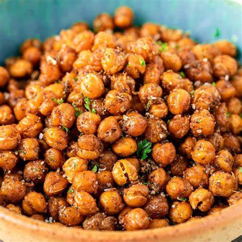

Roasted Chickpeas

Ingredients
- 1 can of Chickpeas
- 2 Tbsp of Olive Oil
- A Heavy Coating of Paprika
- Garlic Powder to taste
- Salt to taste
- Dusting of Cracked Black Pepper
- A squeeze of Fresh Lemon
Directions
- Preheat oven to 400oF.
- Rinse can of chickpeas and pat dry.
- Toss chickpeas in olive oil, lemon, and spices.
- Spread evenly on baking sheet.
- Bake from 30 minutes(for softer), or 50 minutes(for crunchy).